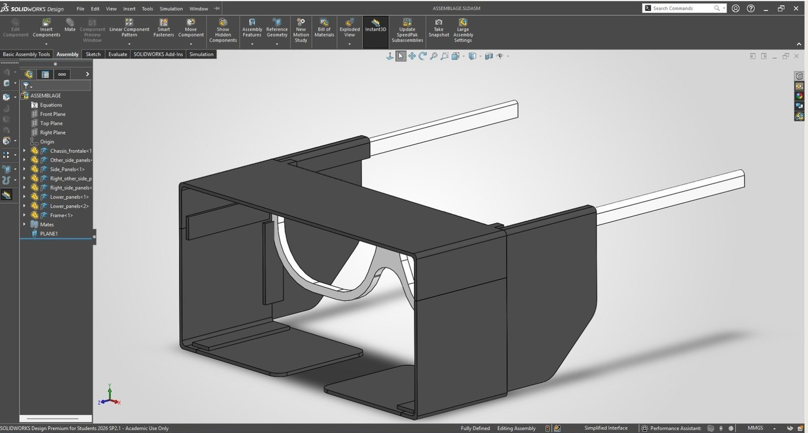
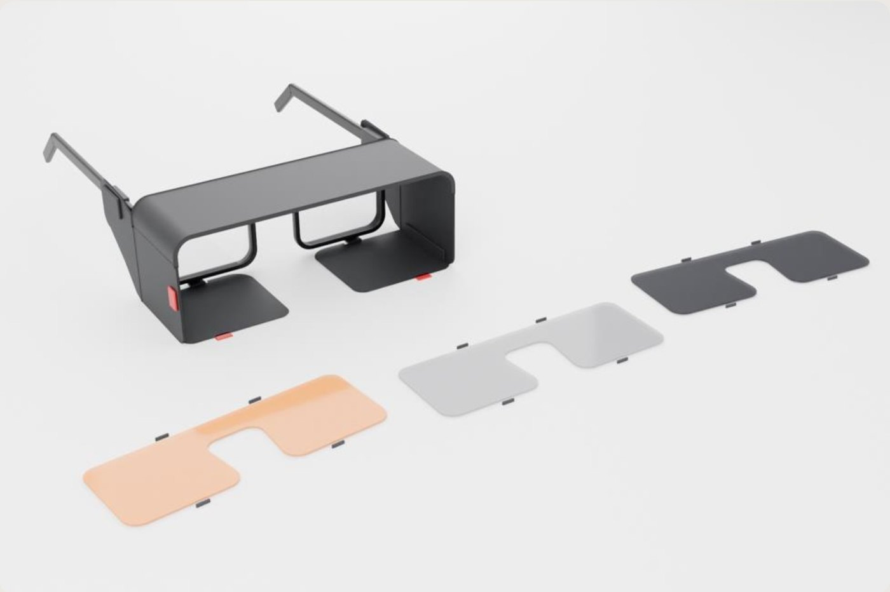
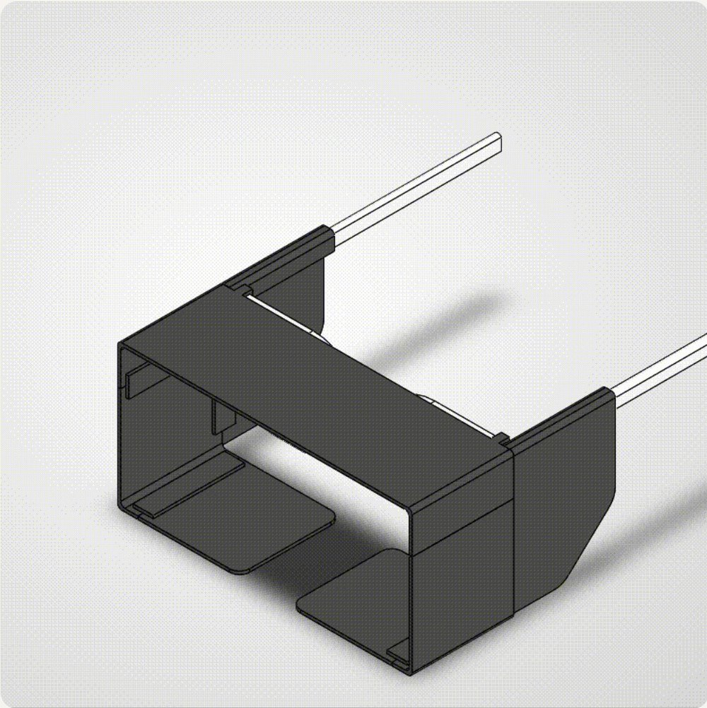

A clip-on visual shield for glasses
A student with a sensory processing disorder is distracted in class by movement, screens and lights at the edge of their vision. Their current fix (modified lab goggles, a mask and a hood) is uncomfortable and doesn't work well. I designed a light, foldable shield that clips onto their own glasses, blocks the top, sides and bottom, and keeps the view to the front clear.

The SolidWorks model
I modelled the whole assembly in SolidWorks around a reference frame, so the fit on the glasses can be checked before anything is printed. Each part is a separate component mated to the frame, which keeps the panels interchangeable and lets one change without rebuilding the others.
| Component | Function | Material |
|---|---|---|
| Front chassis | Monocoque shell with a 50 mm top flap that blocks overhead lights | PLA 1.5 mm |
| Side panels L/R | Block peripheral vision and stop short of the headphone cushions | PLA |
| Lower flaps ×2 | Removable one at a time, to block the bottom or let the student read notes | PLA |
| Clips | Hold the panels on the frame without modifying the glasses | TPU |
| Light filters | Three tints (grey, dark, orange) for bright light and screens | PVC 0.3 mm |
| Frame | Reference geometry the assembly is mated to | Reference |
Three subsystems, one weak link
- Attachment: light clips sit on the frame and carry the panels. They must be stable, quick to remove and never damage the glasses.
- Visual blocking: top, side and lower panels cover the periphery while the centre stays open.
- Folding: panels fold toward the temples on flexible TPU zones, so the device packs flat and survives repeated folding.
The clips carry the panels, and the panels fold on the flexible zones. A badly fitted clip therefore compromises the other two subsystems, so the clips are the next thing to model and test.
From client needs to specs
| Client need | Design target |
|---|---|
| See the teacher and read | Open centre, horizontal field ≤80° (≤120°) |
| Block top, sides, bottom | Panels on three sides, vertical field ≤110° (≤130°) |
| No skin contact | Clearance all around the face |
| Keep noise-cancelling headphones | Nothing in the cushion zone |
| Light and comfortable | Thin walls, mass ≤20 g (≤40 g) |
| No fogging | Venting around the lenses, ≥120 min of wear (≥60) |
| Easy to carry | Foldable panels, folded thickness to be measured |
Test plan
| Test | Method | Pass |
|---|---|---|
| Attachment | 20 head movements, 20 on/off cycles | No detachment, frame intact |
| Field of view | Protractor, object moved along an arc | ≤80° · ≤120° |
| Folding | 50 fold/unfold cycles | No cracks or play |
| Headphones | Worn with the client's own headset | Compatible, no discomfort |
| Mass | Scale, complete device | ≤20 g · ≤40 g |
| Fog & comfort | Continuous wear, then a survey | ≥60 min, comfort ≥8/10 |
During client trials the student installs and handles the device themselves. The team doesn't touch it.
Acting on feedback
Every comment from our teaching assistant got an action and a deadline: an exploded view and installation sequence, a demonstration of putting the clips on and taking them off, adjustable clips, panel shapes checked on a mock-up, benchmarking against existing products and a Zenni square frame, and an updated bill of materials.


